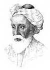

Rubaiyat’ın yazarı olan Ömer Hayyam (1048-1131) bir Fars şairidir. Aynı zamanda matematikçi ve astronomdur. Yaşarken genellikle bilimsel çalışmalarıyla tanınmış olan Hayyam’ın edebi başyapıtı 19. yy’da yeniden keşfedilmiştir. Günümüzde bu çalışma, Ortaçağ İslam edebiyatının en önemli unsurlarından biri olarak kabul edilmektedir.
Rubiayat beş yüzden fazla dörtlükten oluşur. Dörtlüklerde din, doğa ve aşk temaları işlenmektedir. Kederli ve zaman zaman ağıt havasına bürünen derlemenin genel mesajı şu dizelerde gizlidir: “Madem ki yaşıyorsun, iç öyleyse. Ölüm gelip seni bulduğunda, buna fırsatın olmayacak.”
Hayyam, bir Fars şehri olan Nişabur’da doğmuştur. Bu şehir günümüzde kuzeydoğu İran’da yer almaktadır. Hayyam, çadır imalatçısı anlamına gelmektedir. Söylendiğine göre bu ismi ailesinin mesleğinden ötürü almıştır. Hayyam bir dönem felsefe çalışmış, aynı zamanda ünlü bir matematikçi olmuştur. 1070 yılında son derece önemli olan kitabı Cebir Problemlerinin Kanıtlanması Üzerine’yi yazmıştır. Sultan tarafından saray astronomu olarak atanmış ve kendisine yılın uzunluğunu hesaplama ya da Fars takvimini reforme ederek yeniden düzenleme gibi görevler verilmiştir.
Rubaiyat bir İngiliz yazar olan Edward FitzGerald (1809-1883) tarafından İngilizce’ye çevrilmiştir. İngilizce’ye çevrilmesinden kısa bir süre sonra Batı dünyasında ünlü bir eser haline geldi. Eserde yer alan pek çok şiir iyi bir hayatın nasıl olması gerektiği, ölüme rağmen hayattan nasıl zevk alınabileceği ve ölüm gerçeği ile barışmanın önemi gibi konulara odaklanır. Hayyam, iki ünlü pasajında, dolu dolu bir hayat yaşamayı ve ölüm geldiğinde ona hazırlıklı olmayı, ancak aynı zamanda kendimizi dünyanın merkezine koymayarak alçakgönüllülüğü korumamız gerektiğini söyler.

Geldiğinde o kara melek
Seni nehrin ağzında bulacak,
Kadehini sunacak sana, ruhunu davet edecek
Kana kana iç onu, çekinme.
Sen ve ben unutulup gideceğiz,
Elbet dünyanın da sonu gelecek bir gün
Hiç koca deniz çakıl taşlarını sayar mı?
Gelmişiz, göçmüşüz; kime ne!
İnançlı bir Müslüman olarak yetiştirilmesine rağmen Hayyam, çağdaşları tarafından inançsız olmakla suçlanmıştır. Dörtlüklerinden birinde bu durumu anlatarak dertlenir. 83 yaşında Nişabur’da hayatını kaybetmiştir.
Ek Bilgiler
1- ABD eski başkanı Bill Clinton (1946-), Monica Lewinsky (1973-) skandalıyla ilgili kamuoyundan özür dilediği konuşmalarından birinde Rubaiyyat’tan bir dörlük alıntılamıştır: “Kalem yazdı, hüküm kesin / Yürü git şimdi ne aklın ne de dinin / Fayda etmez bir satırını bile silmeye / Boşunadır akan gözyaşların”.
2- 1957 yapımı “Ömer Hayyam” filminde Cornel Wilde (1915-1989) başrolü oynamıştır. Aynı filmde daha sonra ünlü bir şarkıcı olacak olan Yma Sumac da (1922-2008) küçük bir rol almıştır.
3- Hayyam, İsfahan’da astronom olarak çalışırken yılın uzunluğunu 365.24219858156 gün olarak hesaplamıştır. Bu o döneme kadar yapılmış en doğru tahmindi.